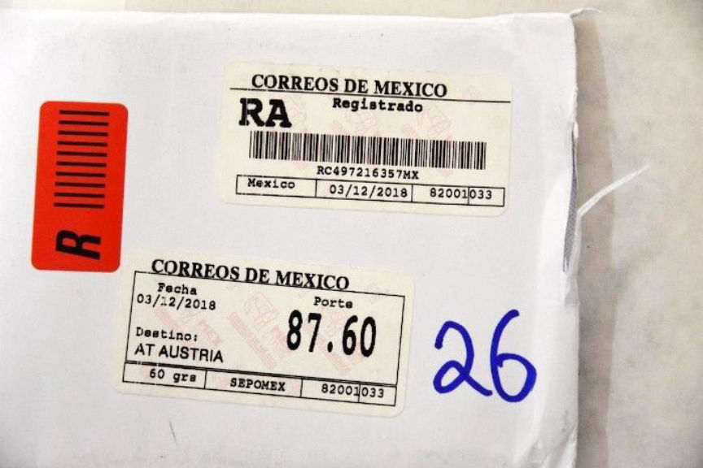
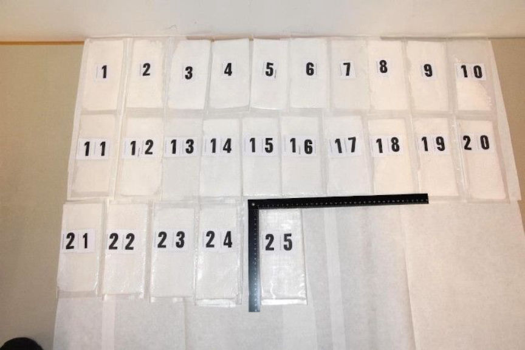
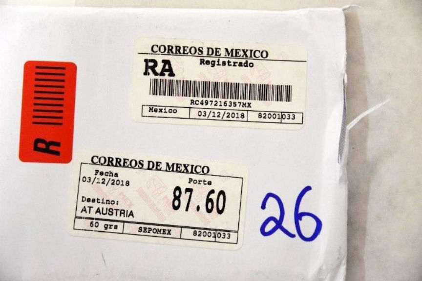
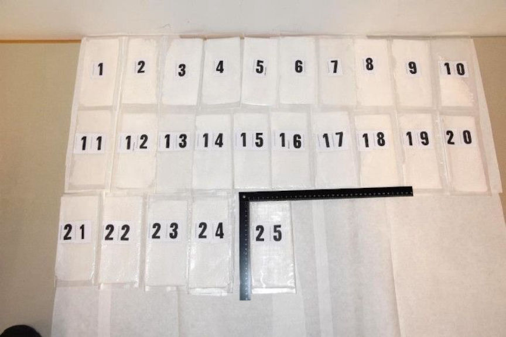

International Darkweb Drug Trafficking Ring Busted in Austria
An ongoing joint operation by Austrian law enforcement agencies has reportedly dismantled an international dark web drug trafficking ring. The ring allegedly purchased and resold large quantities of a variety of drugs on the dark web using cryptocurrencies.
According to the State Office of Criminal Investigation in Vienna, the complex investigations were triggered by the arrest of a 35-year-old Austrian in July 2018. The authorities believe the 35-year-old received mail packages that contained heroin and methamphetamine shipped from the Netherlands and Mexico respectively. The suspect’s arrest followed the interception and confiscation of drug packages and resulted in the seizure of large quantities of drugs and evidence that pointed the investigators in the direction of his accomplices.
The State Office of Criminal Investigation in Vienna liaised with the Federal Criminal Police Office, the city police commando of Graz, the customs investigation office of Vienna and the post office research service and launched a yearlong operation against the ring. In the course of the investigations, the investigators intercepted drugs packages that contained drugs worth hundreds of thousands of euros. The seized drugs included, 6095 grams of methamphetamine, 295 grams of heroin, and 40 grams of amphetamine all ordered on the dark web and paid for in cryptocurrencies.
The authorities conducted several house searches in September where they found and seized forged identification documents, weapons, electronic devices, and an undisclosed amount of cash. They also seized cryptocurrencies equivalent to tens of thousands of euros and an account used in laundering the profits made by the ring. The searches ended in the arrest of six suspects in Vienna and two more in Graz. The authorities believe the suspects may have acted as the Austrian cell for a Mexican drug trafficking cartel that distributes drugs all over Europe.
The investigators reportedly identified the Mexican source of the drugs after intensively analyzing the seized electronic devices. The Federal Criminal Police then shared the extracted information with the FBI and Mexican federal authorities to further help in the investigations. The investigators are also looking into 41 suspects believed to be customers and sub-dealers of the ring.
The State Office of Criminal Investigation in Vienna has withheld most of the operation’s information as it is still ongoing. We will keep you posted as more information on the operation comes to light.
According to the State Office of Criminal Investigation in Vienna, the complex investigations were triggered by the arrest of a 35-year-old Austrian in July 2018. The authorities believe the 35-year-old received mail packages that contained heroin and methamphetamine shipped from the Netherlands and Mexico respectively. The suspect’s arrest followed the interception and confiscation of drug packages and resulted in the seizure of large quantities of drugs and evidence that pointed the investigators in the direction of his accomplices.
The investigation began with a 35-year-old Austrian who had been receiving heroin from the Netherlands and methamphetamine from Mexico | Credit: Polizei
The State Office of Criminal Investigation in Vienna liaised with the Federal Criminal Police Office, the city police commando of Graz, the customs investigation office of Vienna and the post office research service and launched a yearlong operation against the ring. In the course of the investigations, the investigators intercepted drugs packages that contained drugs worth hundreds of thousands of euros. The seized drugs included, 6095 grams of methamphetamine, 295 grams of heroin, and 40 grams of amphetamine all ordered on the dark web and paid for in cryptocurrencies.
Police seized letters and drugs during the investigation | Credit: Polizei
The authorities conducted several house searches in September where they found and seized forged identification documents, weapons, electronic devices, and an undisclosed amount of cash. They also seized cryptocurrencies equivalent to tens of thousands of euros and an account used in laundering the profits made by the ring. The searches ended in the arrest of six suspects in Vienna and two more in Graz. The authorities believe the suspects may have acted as the Austrian cell for a Mexican drug trafficking cartel that distributes drugs all over Europe.
The investigation led to the arrest of six in Vienna and two in Graz | Credit: Polizei
The investigators reportedly identified the Mexican source of the drugs after intensively analyzing the seized electronic devices. The Federal Criminal Police then shared the extracted information with the FBI and Mexican federal authorities to further help in the investigations. The investigators are also looking into 41 suspects believed to be customers and sub-dealers of the ring.
The State Office of Criminal Investigation in Vienna has withheld most of the operation’s information as it is still ongoing. We will keep you posted as more information on the operation comes to light.